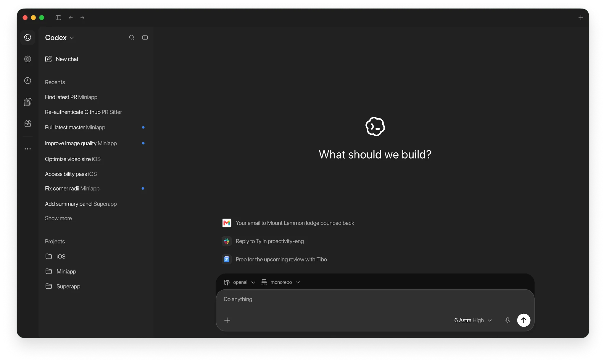
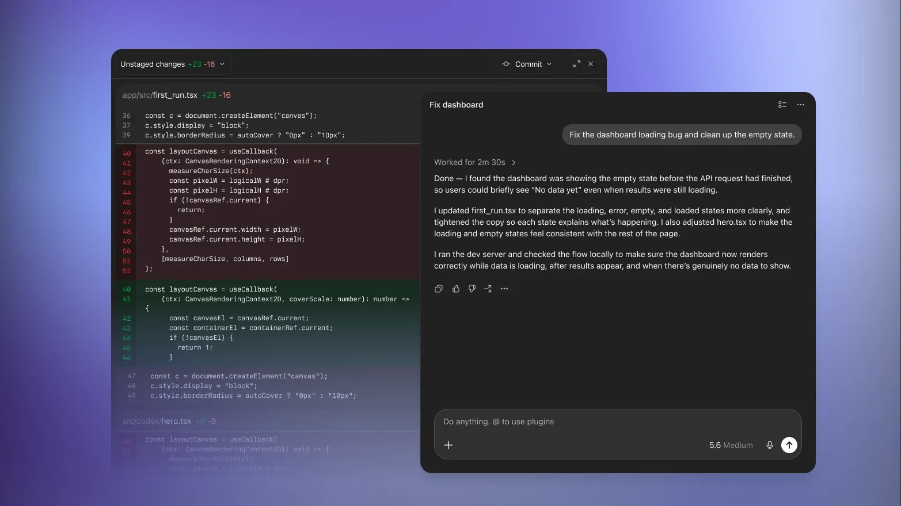

Frame before prompting
A precise problem statement, constraints and examples produce better work than a vague request for a complete solution.
AI is most useful when it compresses exploration, repetitive scaffolding and comparison work. It becomes dangerous when speed is mistaken for correctness. The quality bar still belongs to the designer and developer.


The strongest workflow gives AI clear context and constraints, then deliberately reviews logic, visual hierarchy, accessibility, code quality and edge cases before anything reaches production.
A precise problem statement, constraints and examples produce better work than a vague request for a complete solution.
Ask for outputs in the same design system, code conventions and product vocabulary you already use.
AI can propose options; it cannot own the business context, user trade-offs or taste level.
Check APIs, accessibility, security boundaries, responsive behavior and platform constraints.
Generate alternate flows or implementations, then compare them against explicit criteria instead of accepting the first result.
The perceived quality usually lives in timing, hierarchy, wording, states and edge cases—the part that needs deliberate craft.
Supply task, audience, system rules and non-negotiables.
Generate multiple approaches rather than one supposed final answer.
Choose based on user value, maintainability and visual clarity.
Use generated scaffolding only where it fits your architecture.
Inspect every state, line and interaction before merging or shipping.